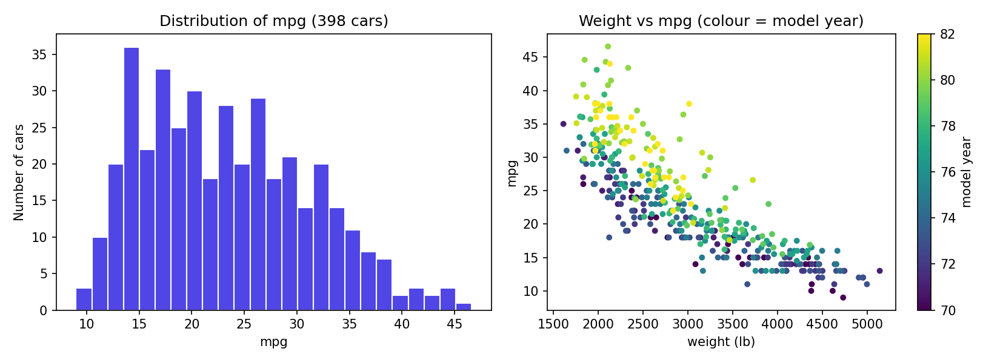

Predicting Car Fuel Efficiency from Design Specifications
Miriyala Sai Priya · IIT Gandhinagar
1. The question
Can a car's fuel efficiency (mpg) be predicted from its design specifications alone (cylinders, displacement, horsepower, weight, acceleration, model year and origin), and which specifications matter most for the prediction?
The data covers cars from 1970 to 1982, so I only claim that the model describes this period, not modern cars. I do not claim that the specifications cause mpg, only that they predict it.
One row of the data is one car model, and the target is its mpg. A prediction like this would be made at design time, before the car is built or road-tested, using only its specifications.
2. The data
Source: the UCI Machine Learning Repository, Auto MPG dataset. One row is one car model.
- 398 cars in total
- Target: mpg
- 7 input variables: cylinders, displacement, horsepower, weight, acceleration, model year, origin (1 = USA, 2 = Europe, 3 = Japan)
- The car name column was dropped because it is only an identifier
- Horsepower has 6 missing values
- Data access: public and free to download from UCI (licence CC BY 4.0). A copy is in the repository as auto_mpg.csv. UCI had already removed 8 cars whose mpg was unknown.
- Quality check: apart from the 6 missing horsepower values there are no missing values. Weight, displacement, cylinders and horsepower are strongly correlated with each other (about 0.84 to 0.95), which matters for choosing and reading the model.
- Source citation: Quinlan, R. (1993). Auto MPG [Dataset]. UCI Machine Learning Repository. https://doi.org/10.24432/C5859H
Variables and how each was handled
| Variable | Meaning | Range in data | Correlation with mpg | Issue and handling |
|---|---|---|---|---|
| mpg (target) | Fuel efficiency, miles per gallon | 9 to 46.6 (mean 23.5) | - | No missing values. Modelled as log(mpg). |
| cylinders | Number of cylinders | 3 to 8 | -0.78 | Used as a number. Very close to displacement (0.95). |
| displacement | Engine size, cubic inches | 68 to 455 | -0.80 | Standardized. |
| horsepower | Engine power | 46 to 230 | -0.78 | 6 missing values (marked "?" in the raw file). Filled with the training median. |
| weight | Car weight, pounds | 1613 to 5140 | -0.83 | Standardized. Strongest single link with mpg. |
| acceleration | Seconds to reach 60 mph | 8 to 24.8 | +0.42 | Standardized. |
| model_year | Model year (70 = 1970) | 70 to 82 | +0.58 | Used as a number and standardized. |
| origin | 1 = USA, 2 = Europe, 3 = Japan | 1, 2, 3 | +0.56 | These are labels, so one-hot encoded. |
| name | Car name | text | - | Dropped, because it only identifies a car. |

Figure. Left: how mpg is spread across the 398 cars (half of the cars are between 17.5 and 29 mpg). Right: heavier cars get lower mpg (correlation -0.83), with the colour showing model year.
3. Preprocessing
First I split the data into 318 training cars and 80 test cars (80/20 split, random seed 42). The test cars are not used for any decision about preprocessing, models or tuning.
- Missing horsepower values are filled with the median of the training data.
- The six numeric columns are standardized (subtract the training mean, divide by the training standard deviation).
- Origin is one-hot encoded, because 1, 2 and 3 are labels and not quantities.
- The model predicts the log of mpg, and the answer is converted back with exp().
All of this is done inside one scikit-learn pipeline that is fitted on the training data only, so no information from the test set leaks in.
4. Baseline and methods
Baseline: predict the average mpg of the training cars for every car. Any real model has to beat this.
Methods tried:
- Linear regression: simple and easy to interpret.
- Ridge regression: linear regression with a penalty on large coefficients. It suits this data because weight, displacement, horsepower and cylinders are strongly correlated with each other.
- Ridge regression on log(mpg): my final model.
- Random forest and gradient boosting: flexible models, to check how much a simple model gives up.
5. Evaluation
- Models and the ridge penalty were chosen with 5-fold cross-validation on the training set only.
- The 80 test cars were used once, for the final comparison.
- Main metric: mean absolute error (MAE) in mpg, which is the average size of a miss. RMSE and R squared are supporting metrics.
- The dataset is small, so I also report how much the score varies across folds.
- Extra experiments: I tried ridge penalties from 0.01 to 100. The cross-validation error was almost the same from 0.01 to 3 (about 2.27 with the log target), so I kept 1.0. I also compared predicting mpg directly with predicting log(mpg), which is where the improvement from 2.67 to 2.27 comes from. All of these runs are in the notebook.
6. Results
Cross-validation on the training set (lower MAE is better)
| Model | CV MAE (mpg) |
|---|---|
| Linear regression | 2.683 ± 0.160 |
| Ridge (penalty 1) | 2.668 ± 0.160 |
| Ridge on log(mpg) (final) | 2.267 ± 0.114 |
| Random forest | 2.042 ± 0.097 |
| Gradient boosting | 1.978 ± 0.181 |
Final test set (80 held-out cars)
| Model | MAE | RMSE | R squared |
|---|---|---|---|
| Baseline (training mean) | 5.955 | 7.347 | -0.004 |
| Linear regression | 2.288 | 2.888 | 0.845 |
| Ridge on log(mpg) (final) | 1.772 | 2.382 | 0.894 |
| Random forest | 1.567 | 2.157 | 0.914 |
| Gradient boosting | 1.762 | 2.345 | 0.898 |
My final model misses by 1.77 mpg on average, compared with 5.96 mpg for the baseline. Taking the log of mpg was the most useful change: it lowered the cross-validation error from 2.67 to 2.27.
The random forest is a bit more accurate than my model (test MAE 1.57), and gradient boosting did best in cross-validation. I still chose ridge on log(mpg) because it can be explained from its coefficients and runs directly in this web page. The test set has only 80 cars, so the small gaps between the better models should not be over-read.
7. Try the model
Move the sliders to design a car. The page applies my ridge model in your browser (the same numbers as in model.json are built into this page) and shows the predicted mpg with an approximate range.
8. Which specifications matter most?
I looked at this in two ways. First, the ridge coefficients on standardized inputs (these act on log(mpg), so a bigger absolute value means a bigger push). Second, I removed one specification at a time, refitted the model, and measured how much the cross-validation error grew.
| Specification | Coefficient | CV MAE rise if removed (mpg) |
|---|---|---|
| model year | +0.115 | +0.799 |
| weight | -0.218 | +0.266 |
| origin | -0.057 / +0.037 / +0.020 | +0.029 |
| horsepower | -0.054 | +0.014 |
| cylinders | -0.027 | -0.012 |
| displacement | +0.053 | -0.006 |
| acceleration | -0.007 | -0.009 |
The two views differ for a reason. Weight has the biggest coefficient, but removing it hurts less than removing model year, because displacement, horsepower and cylinders are strongly related to weight and can partly take over its job. Model year has no substitute. For the same reason, the positive coefficient on displacement should not be read as "bigger engines raise mpg". It comes from related inputs sharing credit.
9. Errors

Points close to the red line are good predictions. The model follows the line well, and the biggest misses are at the high-mpg end. The five largest errors on the test set were:
| Row (index in CSV, from 0) | Specs | Actual | Predicted | Error |
|---|---|---|---|---|
| 394 | 4 cyl, 97 cu in, 52 hp, 2130 lb, 1982, Europe | 44.0 | 36.6 | -7.4 |
| 377 | 4 cyl, 91 cu in, 68 hp, 1970 lb, 1982, Japan | 31.0 | 37.1 | +6.1 |
| 275 | 6 cyl, 163 cu in, 125 hp, 3140 lb, 1978, Europe | 17.0 | 22.9 | +5.9 |
| 30 | 4 cyl, 140 cu in, 90 hp, 2264 lb, 1971, USA | 28.0 | 22.4 | -5.6 |
| 238 | 4 cyl, 98 cu in, 83 hp, 2075 lb, 1977, USA | 33.5 | 28.1 | -5.4 |
Four of the five are small, light four-cylinder cars, where very high or low mpg is hardest to predict from the specifications. Row 394 is a light 1982 car that got 44 mpg, about 7 mpg more than its specs suggest. Things the data does not contain (engine tuning, gearing, aerodynamics, how mpg was measured) are possible reasons, but I did not test that.
10. Limitations
- Old, narrow data. Only 398 cars from 1970 to 1982. Modern cars (hybrids, turbochargers, electric cars) are far outside it.
- Small test set. With 80 test cars and a single random split, the final scores are noisy. Differences of a few tenths of an mpg between models should not be trusted.
- Prediction is not causation. Model year is the strongest predictor, but a year is not a mechanism. It stands in for things like emissions rules, fuel prices and engine technology changing over time. Related specifications also share credit, so individual coefficients (such as displacement) should not be read as separate effects.
- A simpler model than the best one. The random forest is about 0.2 mpg more accurate on the test set. I chose ridge for interpretability and so it can run in the browser.
- One-size error range. The prediction range is a fixed percentage and does not adapt to each car.
- Test set use. I compared all five models on the test set in one final step and made no changes afterwards, but this is still a small, single-use check.
11. Conclusion
Yes: for 1970 to 1982 cars, design specifications predict mpg well. A ridge model on log(mpg) is wrong by about 1.8 mpg on average on unseen cars, compared with about 6 mpg for the average-mpg baseline, and it explains about 89% of the variation. Model year and weight matter most; cylinders, displacement and acceleration add little once those are known. More flexible models are somewhat more accurate, so there is a modest price for choosing a model that can be explained and run in the browser. The result describes this period and dataset and does not show that the specifications cause the efficiency.
12. Reproduce this work
- Get the data from the UCI Auto MPG dataset. A cleaned copy (name column dropped) is in the repository as auto_mpg.csv. Missing horsepower values are empty cells. The notebook also downloads the data directly from UCI.
- Open auto_mpg_project.ipynb in Google Colab or Jupyter (Python 3 with pandas, NumPy, scikit-learn and Matplotlib) and run all cells in order. The libraries are listed in requirements.txt.
- Split: train_test_split with test_size=0.2 and random_state=42 gives 318 training and 80 test rows. The exact row numbers are saved in train_rows.csv and test_rows.csv. Cross-validation uses KFold with 5 splits, shuffle=True and random_state=42.
- Final model: median imputation, standardization of the six numeric columns, one-hot encoding of origin, then Ridge with alpha=1.0 on log(mpg).
- A notebook cell writes model.json (means, scales, coefficients, intercept and error range). Those numbers are what this page uses in the predictor.
Code and data: github.com/miriyalapriya/auto-mpg-project. No passwords, keys or private data are used. The dataset is public.
13. Tools and AI disclosure
I used Python, pandas, NumPy, scikit-learn and Matplotlib for the analysis, Google Colab to run it, and GitHub Pages to host this site. I used an AI assistant (Claude) for planning the project, writing and debugging some notebook code (feature importance, error analysis, the error range and the JSON export), and for guidance and code while building this web page. I ran and checked the code and outputs myself, and I am responsible for every result.
14. References
- Quinlan, R. (1993). Auto MPG [Dataset]. UCI Machine Learning Repository. https://doi.org/10.24432/C5859H (CC BY 4.0).
- Pedregosa, F. et al. (2011). Scikit-learn: Machine Learning in Python. Journal of Machine Learning Research, 12, 2825-2830.